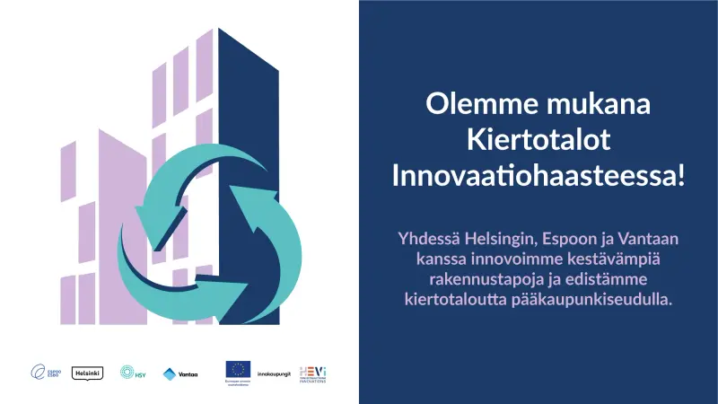

01
Kuvaa
Kuvia työmaan kiinteistä kameroista automaattisesti neljän tunnin välein, tai puhelimella, kameralla tai droonilla suunnitelman koordinaateissa ladattuina.
Toimiva prototyyppi / Seuraavaksi kenttätesti
WorkGuardAI lukee DWG-suunnitelman, joka teillä jo on, ja mittaa maarakennustöiden edistymistä tavallisista työmaakuvista sijainti kerrallaan. Prototyyppi toimii todellisen hankkeen suunnitelmalla ja kuvilla. Nyt etsimme ensimmäistä pilottityömaata.
25.–26.11.2026 Pitchaamme lavalla MeOut Summitissa Budapestissa
01 · Näin se toimii
Kuvia työmaan kiinteistä kameroista automaattisesti neljän tunnin välein, tai puhelimella, kameralla tai droonilla suunnitelman koordinaateissa ladattuina.
Avoimen lähdekoodin tekoälymalli (Depth Anything V2) arvioi kaivannon syvyyden metreinä jokaisesta kuvasta sen suunnitelmakoordinaatissa.
Arvioitua syvyyttä verrataan DWG-suunnitelman mukaiseen syvyyteen, jolloin saadaan edistyminen suunnitelman jokaisessa pisteessä.
Jokainen piste näyttää tilansa värillä, kokonaisedistymispalkki kokoaa työmaan tilanteen, ja sähköpostihälytykset kertovat koordinaatit sekä nykyisen ja suunnitellun syvyyden.
Havainnollistava konsepti esimerkkidatalla. Toimiva prototyyppi; kenttätesti tulossa. Selvitämme seuraavaksi: kameran GPS ja LiDAR tarkkuuden parantamiseksi.
Tavallisia työmaakuvia, kuten niitä, joita prototyyppi mittaa: puhelimella tai droonilla, päivällä ja yöllä.


02 · Prototyyppi
Prototyyppiä on esitelty todellisella DWG-tiedostolla ja todellisilla työmaakuvilla. Se ei ole vielä ollut käytössä käynnissä olevalla työmaalla. Ensimmäinen kenttätesti on seuraava vaihe.


Prototyypin käyttöliittymä, testattu todellisen hankkeen suunnitelmalla ja kuvilla. Seuraavaksi kenttätesti. Asiakkaan tiedostonimet, työmaan koordinaatit ja luvut on sumennettu.
03 · Kenelle
Teillä on jo DWG-suunnitelma. WorkGuardAI näyttää sen avulla, kuinka pitkälle kaivu- ja maarakennustyöt ovat edenneet kussakin sijainnissa, kuvista, joita tiiminne voi ottaa tavallisella työmaakäynnillä.
Kaupungit ja virastot, jotka tilaavat teitä, verkostoja ja muita julkisia rakennuskohteita, voivat seurata edistymistä sijainneittain hyväksyttyyn suunnitelmaan verrattuna, työmaakuvista mitattuna.

04 · Meistä
WorkGuardAI perustettiin Suomessa 30.7.2024. Tiimi työskentelee kuudesta Euroopan maasta, lähellä niitä urakoitsijoita ja julkisia tilaajia, jotka tuotetta käyttäisivät.


05 · Virstanpylväät
Kolme vuotta ohjelmia, kilpailuja ja rakentamista, jokainen askel lähteineen.

MeOut Summit · Budapest, Unkari
1/20
startupista, jotka valittiin noin 200 hakemuksen joukosta pitchaamaan lavalla MeOut Summitin Pitch Marathonissa Budapestissa, Unkarissa, 25.–26.11.2026.
Baltic Impact Accelerator
8 000 €
ohjelmarahoitusta LUT-yliopiston Baltic Impact Acceleratorista (Interreg Central Baltic, EU:n osarahoittama), MVP:n rakentamiseen.



Valittiin yhdeksi 20 startupista noin 200 hakemuksen joukosta pitchaamaan lavalla Pitch Marathonissa 25.–26.11. sijoittajaraadin edessä. Esillä EU-Startupsissa.
Artikkeli EU-Startupsissa (avautuu uuteen välilehteen)Jatkoon 10 viikon kasvuohjelman haussa; pitchasimme valintaraadille Selection Dayna 9.9.
Alustavan arvioinnin jälkeen VINCI Energies kiinnostui WorkGuardAI:sta ja kutsui meidät hakemaan vuoden 2026 haasteeseen ”Expertise meets AI”. Hakemus jätetty.
Suoritimme kuuden kuukauden kiihdyttämön kolmannen ryhmän. Ohjelman rahoittaa Interreg Central Baltic ja osarahoittaa Euroopan unioni; ohjelmarahoitusta 8 000 €.
Tietoa ohjelmasta (avautuu uuteen välilehteen)Ydinmoottori rakennettiin yhdessä kehityskumppanin kanssa, Baltic Impact Acceleratorin rahoituksella.
Mukana Slush 2025 -tapahtumassa Helsinki Incubatorsin alumnien joukossa.
Tiedote LinkedInissä (avautuu uuteen välilehteen)Kolme kaupunkia valitsi meidät kilpailevien tarjoajien joukosta kehittämään kestävämpiä rakennustapoja pääkaupunkiseudulla.
Tiedote LinkedInissä (avautuu uuteen välilehteen)Vieraileva startup Polar Bear Pitchingissä Oulussa 27.2.2025 – palkinto Sauna Pitchingin voitosta.
Voitimme Sauna Pitchingin 24.2.2025.
Tiedote LinkedInissä (avautuu uuteen välilehteen)Suoritimme Helsinki Incubatorsin kuuden kuukauden ohjelman: mentorit ja viikoittaiset työpajat liiketoimintamalleista, myynnistä ja pitchaamisesta.
Yhtiö perustettiin Suomessa 30.7.2024.
Idea syntyi ajoneuvojen etävalvontana. Mentorien palaute ja pitchaaminen kääntivät sen kohti rakennustyömaita.
TUKIJAT

Suoritetut ohjelmat: Baltic Impact Accelerator (LUT-yliopisto, Interreg Central Baltic) ja NEXUS Incubator (Helsinki Incubators, Helsingin yliopisto).

06 · Tiimi


07 · Pilotti
Etsimme ensimmäistä käynnissä olevaa työmaata. Jos teette maarakennus- tai infratöitä ja teillä on niihin DWG-suunnitelmat, lyhyt puhelu riittää selvittämään, sopiiko pilotti.
Näytämme prototyypin esimerkkihankkeella ja tarkistamme, sopiiko työmaanne: maarakennus- tai infratyö, DWG-suunnitelmat ja joku, joka voi ottaa kuvia.
Yksi työmaa, kiinteä jakso ja selkeä tietojenkäsittely, sovittuna lyhyessä pilottisopimuksessa. Lataamme DWG-suunnitelmanne ja luomme tiimillenne käyttöoikeudet.
Tiiminne ottaa kuvia suunnitelman koordinaateissa. Pidämme yhteyttä viikoittain ja vertaamme tuloksia omiin mittauksiinne. Saatte kirjallisen tulosraportin.
Piloteista sovitaan työmaa kerrallaan. Hinta määritetään kenttätestin jälkeen sen tulosten perusteella.
Teknologia-, mittaus- ja rakennusalan kumppaneille sekä rahoittajille, kaupungeille, yliopistoille ja sijoittajille, jotka tukevat varhaisen vaiheen eurooppalaista rakennusteknologiaa.
ek@workguardai.com